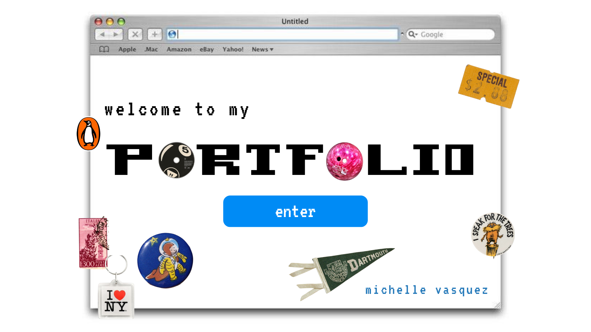
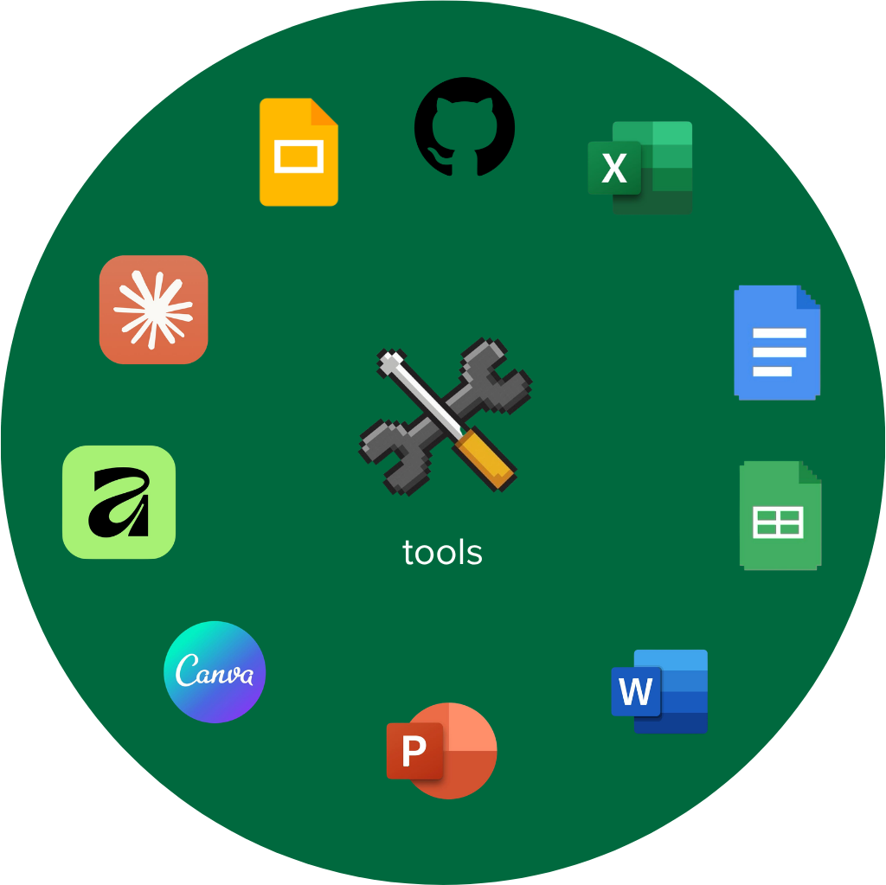
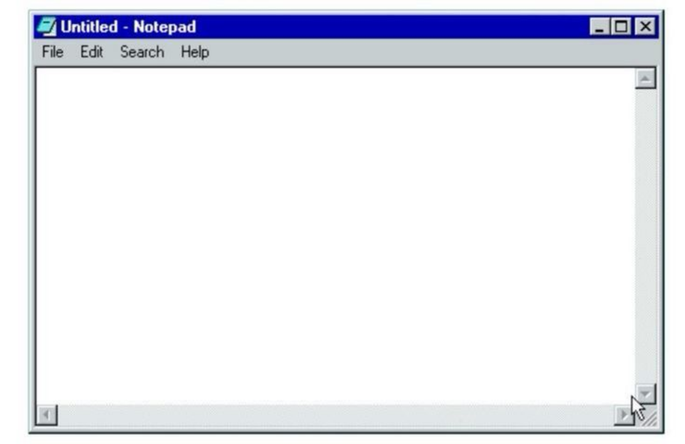
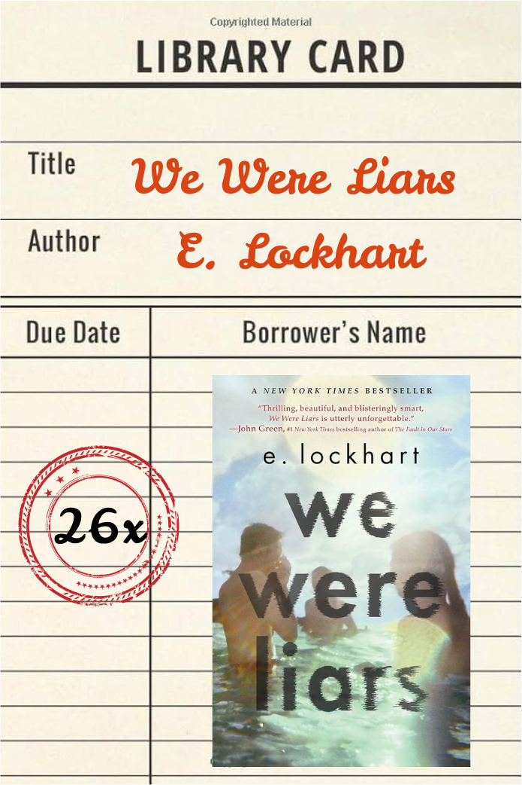

currently listening
currently listening
Click any folder or
icon to view more!
icon to view more!
leave a comment?

currently listening

I am drawn to designing and reworking systems and services, especially in the educational field. Efforts to reform American education stretch back 150 years, with mixed results. This history makes it easy to assume that the system is broken beyond fixing, or that only top-down legislation can move it. I believe meaningful change comes from the people closest to students: educators, parents, administrators, and the designers who work alongside them. That last group is where I want to contribute.
My projects are based on the Human Centered Design principles and values, designing for real human needs rather than adapting humans to machines. The process I follow draws on IDEO's popular framework: empathize, define, ideate, prototype, and test. In practice, that means I spend more time than most in the first two phases. I've found that the quality of everything toward the latter end — the ideas, the prototypes, the final design — depends almost entirely on how well you've understood the problem and the people facing it before you try to solve it. I have worked with small groups of 3–4 other HCD students, as well as collaborated with local Upper Valley schools and organizations.
Outside of design, I spend a lot of time writing. This is mainly in the form of journaling about the things I thought and saw that day or writing short stories based on observations I've made throughout the day. That instinct to observe and sit with something before drawing conclusions has shaped how I design — I'm rarely the first person in the room to propose a solution, but I tend to ask the question nobody thought to write down.


In my midterm reflection I wrote that “good design is unfinished.” Looking back on the work we’ve done this term and the website I created, I believe it more than ever. However, what I meant then was that designs can always be improved, that nothing is truly finished. What I know now is different: unfinished isn’t a flaw in good design — it’s the point. A design with a longer life has more chances to be reshaped and given new meaning by the people who use it. At the midterm I was still thinking about completion, drowning in stress over completing the final deliverable and not looking at the future of my design.
This essentially sums up how I, and my approach to design, has changed over these past few weeks. For this final challenge I was forced to engage with things I had never done before. Yet, as I have seen throughout this class, my confidence in designing has grown considerably because of this. This course has pushed me to run through the design process, from ideation to creation, without giving me the time to second guess myself or stray from my first few original ideas. This has given me the confidence to run with the first idea that strikes my interest and aligns with my passions, and I think this has allowed me to create better projects overall. I don’t think this project, or I, am finished. Even now that the course is over, I can already see where Version 4 would begin. But, as I said before, I believe “good design is unfinished,” and DIPS has proven that to be true. This project is better for every “round of friction,” every difficulty, and every failed prompt.
I know now that I design best, and am most happy, when I am working with service or program design that looks at stakeholders holistically. I also know that I am a better designer for accepting unfamiliar ideas that have challenged my ways of thinking before this course and keeping those in my “designer’s toolkit,” because these seeds of feedback are what will shape the way I approach every project from now on.

CHALLENGE: Propose an innovation that allows Dartmouth professors and staff to better integrate computer tools into their curricula without replacing student effort or critical thinking.
SOLUTION: BLINKY -- an A.I. Teaching Assistant embedded in Canvas that supports professors with grading, feedback, and course management while keeping students at the center of the learning process.
CONCEPT: A spring-inspired bag designed around a defined target audience, balancing functionality with seasonal aesthetic sensibility and expressive material choices.
PROCESS: Target audience research --> concept sketches --> material exploration --> prototype construction --> final presentation.
ONE-SENTENCE OUTCOME: A functioning, Claude Code-built web app where Dartmouth students can display, share, and discover project work regardless of discipline or polish level -- an idea born from a forgotten folder on a desktop that became a real, shareable platform.
The Dartmouth Innovative Project Studio was the final project for ENGS 15.15 (Design Survivor). The idea came from looking at a folder on a desktop full of projects from this class and others that had simply been forgotten. At Dartmouth, a common belief among students is that portfolios and independent projects only exist to serve future professional purposes -- job applications, graduate school, networking. That culture means creative work goes undocumented if it is not impressive or professional enough, and students outside of STEM, Art, or Business fields often regard their project work as less valuable.
Students spend days, sometimes weeks, working on projects that had nowhere to live after the course ended. The feedback on this work is often external -- from professors or hiring committees -- which makes the work feel disposable. Independent projects and class assignments are constantly devalued. The core belief behind DIPS: exhibiting work changes how students value it in the first place. The goal was to create a space where every project has a purpose, is seen, and can live for future students to reference and draw inspiration from.
Research began with a short round of interviews with Dartmouth students, conducted during Version 1 and revisited while building Version 3 for final user testing. Interviews explored what features would make the site useful and what would help users engage effectively. A persona of a target user -- their goals and challenges when it comes to displaying project work -- guided the feature prioritization throughout the build.
The project progressed from paper and pencil sketches to Canva drafts to a vibecoded web app using Claude Code. The first Canva draft was too busy and pastel, with no room for navigation or a search feature and no directions for how to use the site. Version 2 fixed the visual problem but introduced a new one: prompts to Claude were too vague, so Claude began creating its own iteration of the design -- generating its own art and using colors and fonts that simply weren't wanted.
Dead end: Trying to solve design and function at the same time. The fix was to set the overall design difficulties aside and work on interactive features first -- sidebar, navigation, upload procedure -- then return to the aesthetic of the final site. Separating these two workstreams made both more achievable.
Dialing back the design rather than adding to it. The original Canva design was full of color and patterns. It had personality but I couldn't imagine students actually using it as part of the Dartmouth experience. The decision to strip many of these elements and switch to Dartmouth's green was not just aesthetic -- it immediately communicated who the site was built for.
Letting the design take a backseat while building interactive features. When Claude kept going in its own visual direction, the instinct was to keep fighting it on aesthetics. User tests confirmed what actually mattered: the ability to write in filters so users could get specific with what they were looking for, and a message system so the site could facilitate real collaboration, not just browsing. Getting function right first made finishing the design feel achievable rather than like starting over.
What changed: A functioning Claude Code-built web app reached V3 and was presented at Technigala 2026. While this site is not yet ready for all users, an idea born from a forgotten folder on a desktop became a real, shareable platform that other Dartmouth students could eventually engage with.
What you learned: "Good design is unfinished." I started this course thinking good design required time, experience, exhaustive research, and certainty. I leave it knowing that what it more importantly requires is a willingness to start, a discipline to listen and iterate, and the humility to let things that aren't working go.
ONE-SENTENCE OUTCOME: Redesigned the sneaker as a modular, part-swappable product so consumers may only replace what wears out or falls out of style -- addressing the core insight that people tend to discard shoes not because the whole shoe fails, but because one part does.
This project was a design challenge in ENGS 15.15 (Design Survivor), built around the question: what would it take to design a product someone could own and use for 30 years? My partner and I chose to focus on the sneaker industry because, even though shoes are considered a necessity, 2.68 billion pairs are purchased annually in the United States alone, most lasting only 12--18 months before being discarded. The expense and sustainability concerns were what provoked this design direction.
People are not discarding sneakers because the whole shoe fails. They are getting rid of them because one part wears out, or the shoe falls out of style, or no longer fits their personal needs. The average sneaker offers no way to fix just one component. The current shopping experience presents a single choice: pick a shoe and live with it until it fails.
My partner and I conducted individual interviews with people who had owned objects for 30 or more years, looking for patterns across cases. Three themes emerged:
Emotional attachment -- connections between people and objects tied to identity and memory. Durability -- items that still function feel wasteful to discard. Future utility -- people delay disposing of products they believe they will need again.
Working from three research patterns, our team focused on how the sneaker redesign could best create user agency over the object continuously over time. Drawing on Chapman's Emotionally Durable Design, Sennett's theory of repair as understanding, and Patagonia's durability-as-desirability model, the modular sneaker puts the consumer in the role of craftsman from the start: building their shoe, replacing parts when needed, and trading pieces in for store credit when done.
Dead end: We initially considered a change of experience by designing a simple repair service for broken or worn shoes. We scrapped this because it addresses the problem after it occurs -- the goal was to prevent the disposal impulse entirely from the start.
Mail-in or in-store trade system: Rather than just selling replacement parts, our design includes a system where used components can be recycled in exchange for store credit. This addressed sustainability directly and created a business incentive for durability over disposal.
Workshop-style retail experience: The redesigned store replaces the cold, warehouse format with a space where customers build their shoe from parts that suit their style and needs. The existing store format -- walls of near-identical choices -- actively discourages the relationship-building with an object that makes long-term ownership possible. Designing the experience of acquiring the shoe was as important as designing the shoe itself.
What changed: While no prototype was built or tested, this concept design reframes the sneaker's entire lifecycle -- from an easily disposable trend-driven product to an evolving, owner-managed object.
What you learned: The value of real people's stories. Before arriving at a design focus, my partner and I heard actual accounts of why people chose to own things for long periods of time. This made every design decision feel grounded and directly informed the feeling we wanted to create with the final product.
ONE-SENTENCE OUTCOME: Created a foundation of research, observations, and interview data for a team of HCD students, Hartford School District partners, and Professor Rafe Steinhauer to continue reshaping the onboarding process for English Language Learners in the district.
This was a collaborative project that brought together Rafe Steinhauer's Design & Education course with Upper Valley School Districts. Teams were paired with the Hartford School District, which had already assembled a group of Equity Coordinators and Administrators to tackle issues of belonging and access in the district's middle and high schools.
Our challenge was to understand the ELL (English Language Learner) student experience and develop a plan for providing students an immediate sense of belonging in their first few months in the Hartford School District. A student who had recently relocated from another country described Hartford High School as isolating -- there was no space to speak their native language, and the requirement to communicate exclusively in English throughout the school day was exhausting.
My team conducted 11 student interviews (across middle and high school) and 11 stakeholder interviews (principals, social workers, teachers, and ELL educators). We led two co-creation sessions with stakeholders using gallery walks and affinity mapping, and created a flowchart tracing an ELL student's journey from enrollment through graduation.
The central insight was that belonging for ELL students is less about language mastery and more about connection. Through sports, peer relationships, and cultural expression, students found belonging that extended beyond academics. Students described feeling exhausted by constant English immersion and disconnected from their culture, while educators felt underprepared and defaulted to deferring all ELL responsibility to the district's only two ML (Multi-Lingual) teachers.
The project centered on data collection, organizing themes through affinity mapping and flowchart exercises. From these, our team identified orientation as a key intervention point -- shaping the three napkin pitches we created for continued building by a new HSD team.
Dead end: Initial exploration of digital translation tools and apps like Talking Points and Parent Square showed that technology was not the barrier to belonging. This shifted our focus toward human-centered interventions -- mentorship programs and community-building events -- that addressed the root cause directly.
Centering on extracurriculars and cultural expression rather than academic supports. Initially, as we learned that ELL students typically score lower than English-speaking peers, we explored ways to build belonging in the classroom. As interviews expanded, we saw how extracurricular activities bridge the connection between ELL students and their school communities upon arrival.
Persona mapping before napkin pitches. We mapped school engagement against access to a first-language community outside of school. Students in the lower-left quadrant -- those with low extracurricular engagement and low native-language community access -- face the most isolation. One Hartford High student described the exhaustion of full-time English immersion and the distance from her culture after being unable to speak her native language to anyone outside the home. Designing from the hardest cases shaped ideas with meaningful impact for all incoming ELL students.
What changed: The project produced three beginning stages of program design: a sports tryout program, a Multicultural Night event, and a peer mentorship program partnered with Dartmouth College. The most significant deliverable was the collection of data from ELL students, administrators, district members, educators, and both ML teachers -- the foundation of knowledge that HSD partners and the continuing student team will build from.
What you learned: The hardest design constraint wasn't generating ideas; it was resisting the impulse to address administrative or language-barrier issues (which are real but outside of scope) and focusing on the belonging that the most isolated students faced. In future iterations, building a pilot for even one program idea before the project ended could have left the new team with user-tested data to build from as they continued the work.